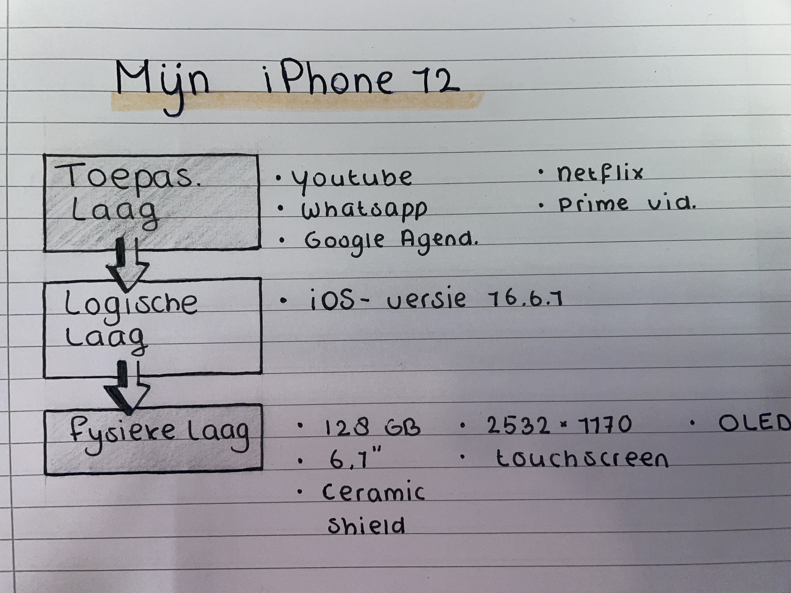

De 3-Lagenmodel
De fysieke laag. Deze laag bestaat uit de hardware die in een smartphone zit: van de accu tot en met het touchscreen. De logische laag bestaat uit software die de hardware aanstuurt. Deze software maakt het mogelijk om toepassingen (zoals apps) op het apparaat uit te voeren. Bij een smartphone bestaat de logische laag voornamelijk uit het besturingssysteem, bijvoorbeeld Android of iOS. We noemen dat een besturingssysteem omdat het de hardware bestuurt. Ook bepaalt het bijvoorbeeld wat apps mogen doen. De toepassingenlaag bestaat uit allerlei software: de toepassingen of applicaties. Op een smartphone zijn dat de apps die kunnen worden geïnstalleerd vanuit de Play- of Appstore.
Dit is het model van mijn mobiele telefoon.